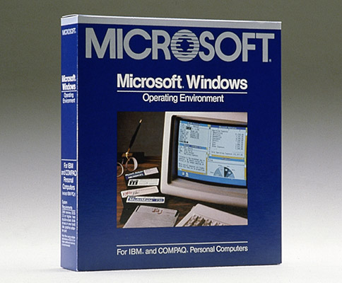
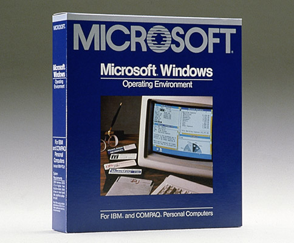
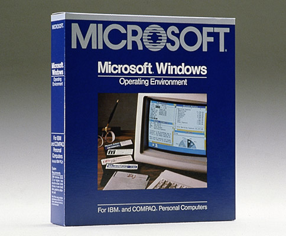

Al ver las limitaciones de las primeras interfaces basadas en caracteres, y reconociendo que los avances en el rendimiento del hardware hacían posible un cambio en el prototipo de la informática con una interfaz gráfica de usuario, Microsoft comenzó el desarrollo de Windows en 1982.
El 20 de noviembre de 1985, sale al mercado Windows 1.0, donde en lugar de escribir comandos de MS-DOS, podías desplazarte entre pantallas o "ventanas", señalando y cliqueando con el ratón. En Windows 1.0, había menús desplegables, barras desplazables, iconos y cuadros de diálogo que facilitaban el aprendizaje y el uso de los programas. Además, se podían alternar varios programas sin tener que salir de ellos y reiniciarlos de manera individual. Windows 1.0 incluía también varios programas, entre los que estaban la administración de archivos de MS-DOS, Paint, Windows Writer, Bloc de notas y Calculadora, así como un calendario, un archivo de tarjetas y un reloj, que ayudaban a administrar las actividades diarias. Incluso tenía un juego: Reversi.

Escritorio y caja de Windows 1.0
Ir a...
Inicio